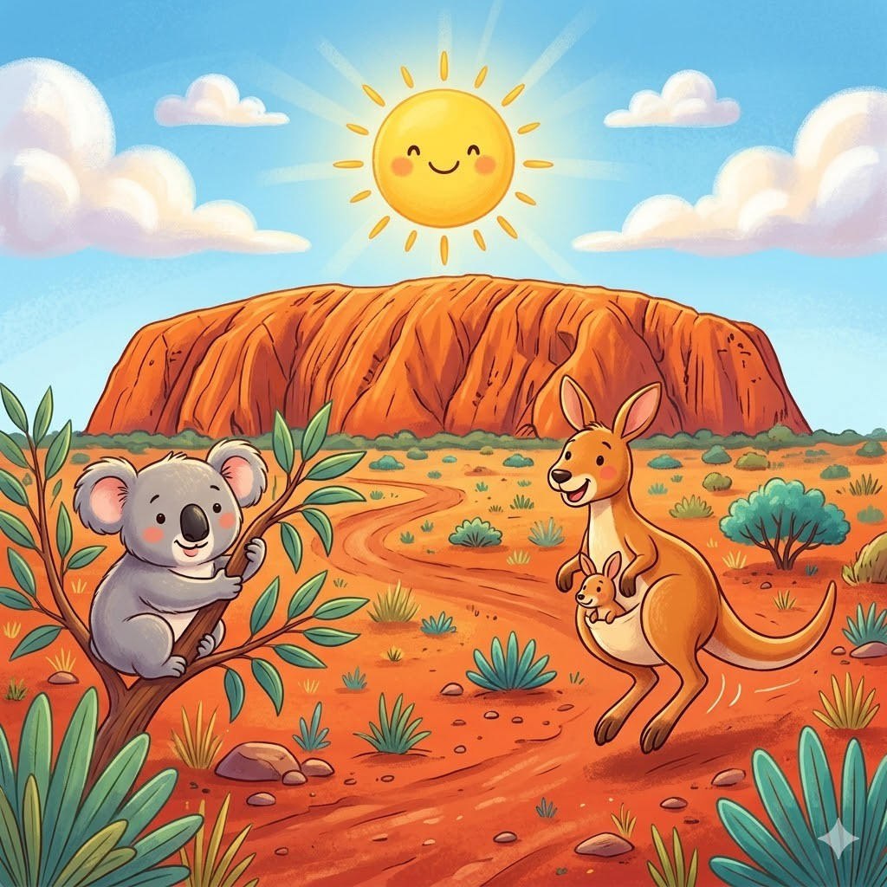
Hier stehen die wichtigsten Daten zu deinem Land. In der App baust du daraus deinen eigenen Steckbrief.
| Hauptstadt | Canberra |
| Kontinent | Australien |
| Sprache | Englisch |
| Währung | Australischer Dollar |
| Einwohner | rund 27 Millionen Menschen |
| Fläche | fast 7,7 Millionen km², also über zwanzigmal so groß wie Deutschland |
| Großer Berg | Mount Kosciuszko, 2.228 Meter hoch |
| Nachbarländer | keine Länder an Land, denn Australien ist eine riesige Insel; die nächsten Länder über das Meer sind Papua-Neuguinea, Indonesien und Neuseeland |
In Australien gibt es viele berühmte Orte. Diese vier solltest du kennen.
Opernhaus von SydneyDas Opernhaus steht am Hafen von Sydney. Sein Dach sieht aus wie große weiße Segel. Hier wird Musik gespielt und gesungen. Das Opernhaus ist ein Wahrzeichen von Australien.
Grüne Wörter für die Appam Hafenvon Sydneyweiße SegelMusikWahrzeichen
UluruDer Uluru ist ein riesiger roter Felsen in der Wüste. Er liegt mitten in Australien. Für die Ureinwohner ist der Berg heilig. Am Abend leuchtet der Uluru rot in der Sonne.
Grüne Wörter für die Approter Felsenin der Wüstemitten in Australienheiligleuchtet
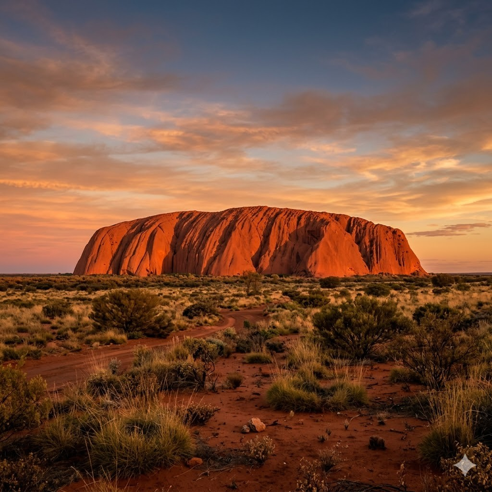
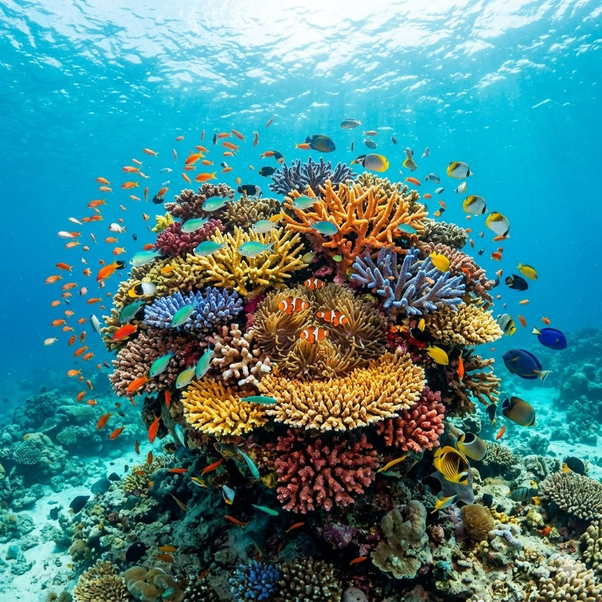
Great Barrier ReefDas Great Barrier Reef ist das größte Korallenriff der Welt. Es liegt im Meer vor Australien. Dort leben bunte Fische, Schildkröten und Korallen. Viele Menschen tauchen hier und schauen sich die Tiere an.
Grüne Wörter für die Appgrößte Korallenriffim Meerbunte FischeSchildkrötentauchen
Sydney Harbour BridgeDie Harbour Bridge ist eine große Brücke in Sydney. Sie führt über den Hafen und sieht aus wie ein Bogen. Mutige Menschen können oben über die Brücke klettern. Von dort hat man einen tollen Blick auf die Stadt.
Grüne Wörter für die Appgroße Brückeüber den Hafenwie ein Bogenkletterntollen Blick
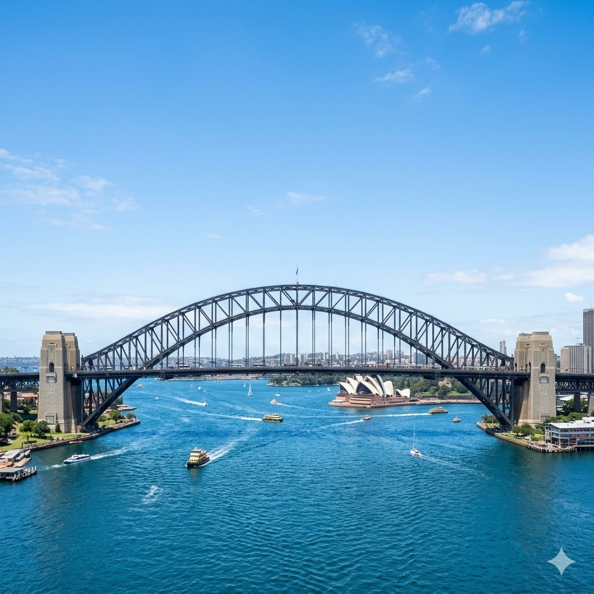
Diese Tiere leben in Australien und sind ganz besonders.
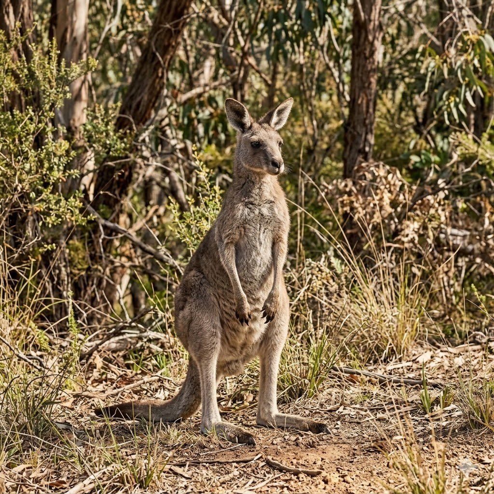
KänguruDas Känguru lebt nur in Australien. Es hüpft auf seinen starken Hinterbeinen weit durch das Land. Das Baby wächst in einem Beutel am Bauch der Mutter heran. Kängurus fressen am liebsten Gras und Blätter.
Grüne Wörter für die Appnur in Australienstarken Hinterbeinenhüpfteinem BeutelGras
KoalaDer Koala sieht aus wie ein kleiner Bär, ist aber keiner. Er lebt auf hohen Eukalyptusbäumen. Den ganzen Tag frisst er Blätter und schläft sehr viel. Auch der Koala trägt sein Baby in einem Beutel.
Grüne Wörter für die Appkleiner BärEukalyptusbäumenfrisst er Blätterschläft sehr vielBaby
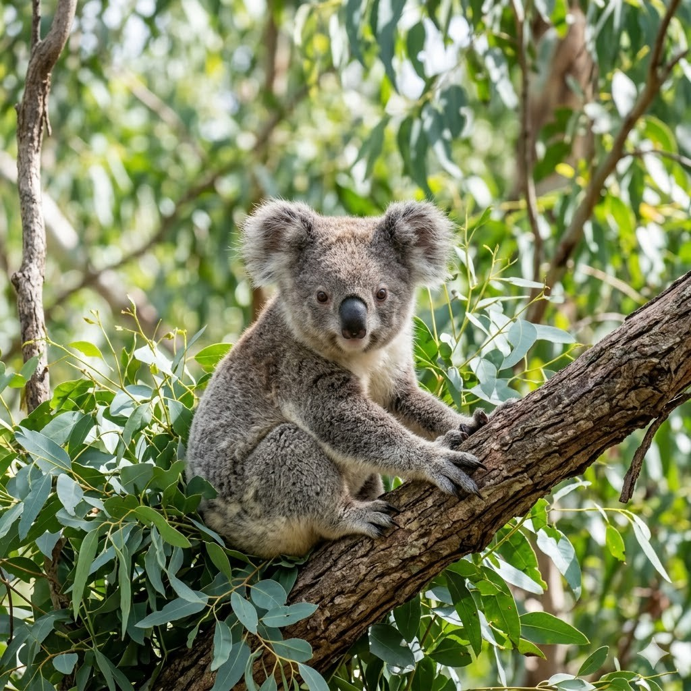
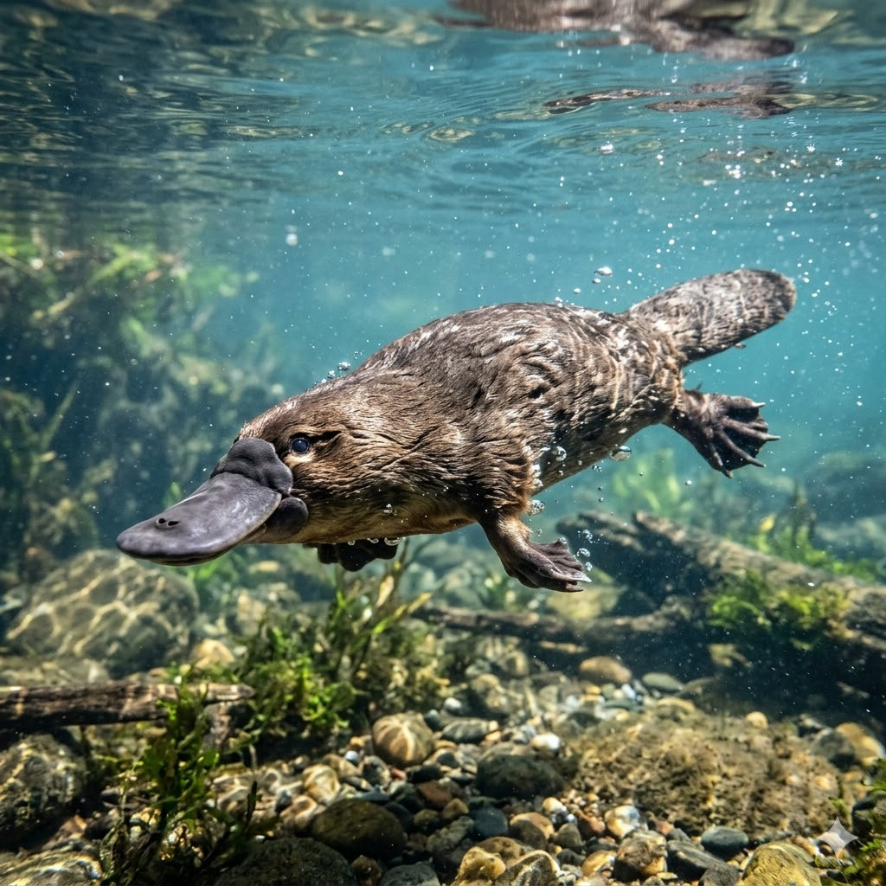
SchnabeltierDas Schnabeltier ist ein ganz seltsames Tier. Es hat einen Schnabel wie eine Ente und einen breiten Schwanz. Es lebt im Wasser und an Land. Das Schnabeltier legt Eier, obwohl es ein Säugetier ist.
Grüne Wörter für die Appseltsames Tierwie eine Enteim Wasserlegt EierSäugetier
In der App kannst du beim Essen das Foto nehmen oder dein Gericht selbst malen.
Meat PieEin Meat Pie ist eine kleine Pastete aus Teig. Innen ist sie mit Fleisch und Soße gefüllt. Man kann sie gut in der Hand halten und essen. In Australien isst man Meat Pies oft beim Sport.
Grüne Wörter für die Appkleine Pastetemit Fleischin der HandMeat Piesbeim Sport
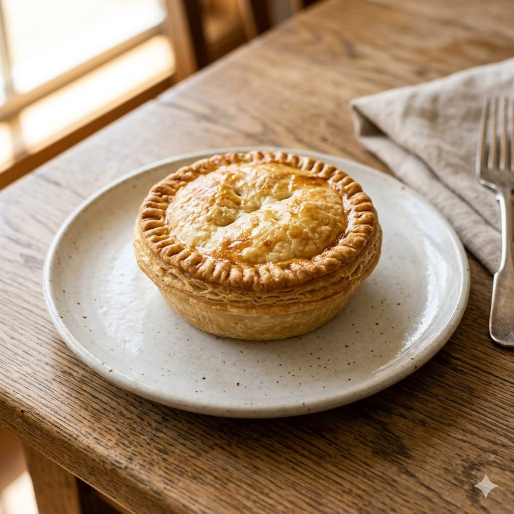
VegemiteVegemite ist ein dunkler Brotaufstrich aus Australien. Er ist sehr salzig und schmeckt kräftig. Man streicht ihn ganz dünn auf Brot mit Butter. Viele Kinder essen Vegemite schon zum Frühstück.
Grüne Wörter für die Appdunkler Brotaufstrichsehr salzigganz dünnmit Butterzum Frühstück
LamingtonEin Lamington ist ein kleiner süßer Kuchen. Er wird in Schokolade getaucht und in Kokosflocken gewälzt. Innen ist er weich und luftig. Zum Geburtstag gibt es in Australien oft Lamingtons.
Grüne Wörter für die Appsüßer Kuchenin SchokoladeKokosflockenweichLamingtons
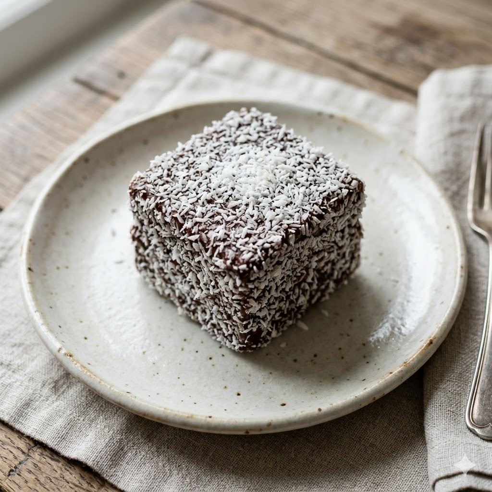
⚽ Gut zu wissen
Die Fußballmannschaft von Australien heißt Socceroos. Der Name kommt vom Känguru, das auf Englisch Kangaroo heißt. Die Spieler tragen meistens ein gelbes Trikot mit grün. Australien ist oft bei der Weltmeisterschaft dabei. Fußball wird im Land immer beliebter.
Grüne Wörter für die AppSocceroosvom Kängurugelbes TrikotWeltmeisterschaftimmer beliebter
🌟 Profi-Wissen
Die australische Nationalmannschaft heißt Socceroos. Bei der WM 2022 erreichte Australien das Achtelfinale. Bekannte Spieler sind Mat Ryan und Mitchell Duke. In Australien spielt man auch Cricket, Rugby und Australian Football, aber Fußball wird immer beliebter.
Grüne Wörter für die AppSocceroosWM 2022 AchtelfinaleMat RyanAustralien-FußballDown Under
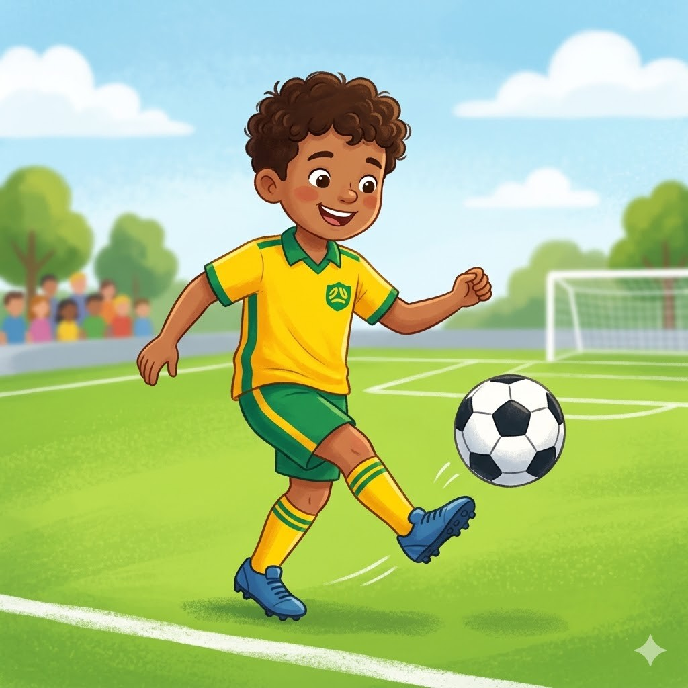
Schule in AustralienIn Australien tragen die Kinder oft eine Schuluniform. Weil die Sonne stark ist, gehört ein Hut dazu. Die großen Ferien sind im Dezember mitten im Sommer. Dann ist bei uns gerade Winter.
Grüne Wörter für die Appeine Schuluniformein Hutgroßen Ferienim Dezemberim Sommer
Leben am StrandViele Kinder in Australien wohnen in der Nähe vom Meer. Am Wochenende gehen sie oft an den Strand. Dort lernen sie früh das Schwimmen und das Surfen. Rettungsschwimmer passen auf, dass alle sicher baden.
Grüne Wörter für die Appvom Meeran den Stranddas SchwimmenSurfenRettungsschwimmer
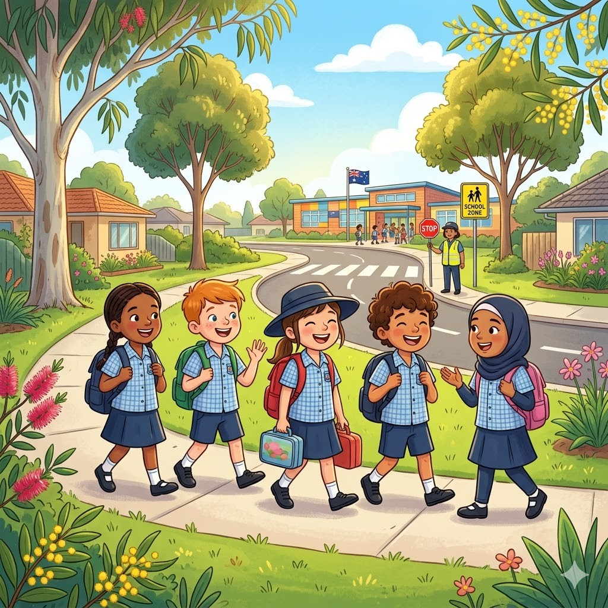